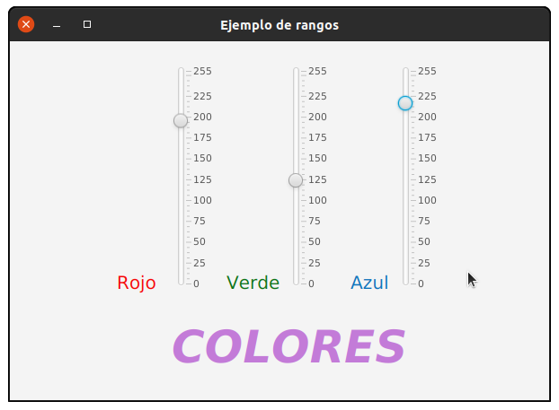
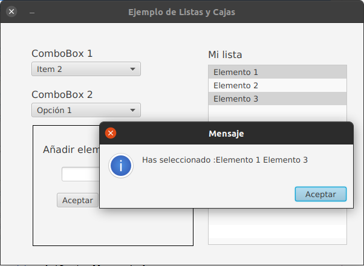
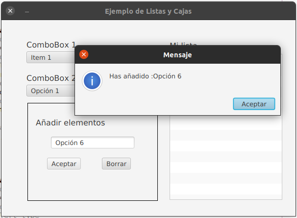
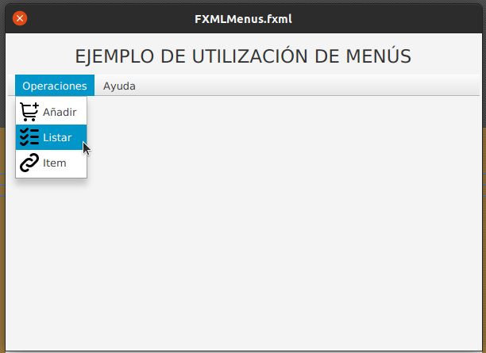

Ejercicio. Rangos.
Crea un proyecto, llamalo DefColor.java. Incorpora tres componentes Slider uno para cada color RGB (Rojo, Verde y Azul) con valores comprendidos entre 0 y 255. Añade también un texto (por ejemplo la palabra COLORES) y modifica su propiedad de color dependiendo de los valores de los Slider.
El control Slider tiene muchos eventos, estos son algunos de los más utilizados:
Cuando pulsamos con el ratón sobre el puntero de un control Slider con el fin de modificar su valor, los eventos que se generan son los siguientes:
- OnMousePressed cuando pulsamos el ratón
- OnMouseDragged en caso de que deslicemos su puntero
- OnMouseReleased cuando dejamos de pulsar el ratón
- OnMouseClicked justo después del anterior evento
Si quieres ejecutar un código justo en el momento de soltar el ratón necesitas captar el evento OnMouseReleased. Es aquí donde tienes que colocar cualquier código que actualice o modifique otros Slider para evitar un reajuste contínuo de éstos (y posiblemente un parpadeo molesto) antes de llegar al valor deseado.
Crear un color RGB:

Ejercicio. Listas y cajas.
Implementa un proyecto que corresponda a la imagen siguiente:

Mostrar un mensaje con el item seleccionado ComboBox1 cada vez que cambie..
Mostrar un mensaje con el item seleccionado ComboBox2 cada vez que cambie..
Permitir seleccionar más de una opción de ListView y muestra items seleccionados en una Alert.
Si se escribe un nuevo Item y pulsamos el botón de Añadir, se añadirá en ComboBox2.

Si se escribe un item y pulsamos el botón de Borrar y existe, se borrará de ComboBox2.
Ejercicio. Menús.
Realizar un proyecto que muestre un menú con 4 entradas: Añadir, Listar, Item y Salir, tal y como se muestra en la siguiente imagen:

Añadir eventos para las opciones de Añadir, Listar, Item y Salir, que nos alerte de que lo opción ha sido seleccionada.